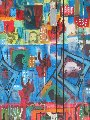
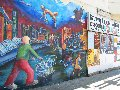

Sunday - San Francisco
The others were heading back to the UK today, so we met up with them for breakfast at Louis Diner before going our separate ways.
I'd read about the murals in Mission in the Photo Secrets guide to San Francisco and Northern California and so we headed off for a look at them, and decided to concentrate our efforts on Balmy Alley. This was a great idea as there are so many of them to see, and they're so very impressive. There are other murals all over Mission but we only saw a handful of them.
We headed back to the Yerba Buena gardens and sat around there for a while before going in search of the Ansel Adams Centre for Photography which we'd seen mentioned in the book. Unfortunately this had closed since the book was written.
Our next stop was to find the the Carnelian Room in the Bank of America building - the highest publically accessible point in San Francisco which hosts a very pleasant cocktail bar.
Before we left the UK our friend Nathan (who'd lived in San Francisco for 4 years) had recommended some restaurants, and we decided to go to the Baker Street Bistro - his favourite restaurant. It was a great little find, and wasn't somewhere we'd have ventured to without his recommendation.
(38 images.)
Back to index
Earthquake report June 12 |
Beckham makes the San Francisco Chronicle |
Mural I Part I |
Mural I Part II |
Mural II | 
Close up on Mural II | 
Mural III |
Close up on Mural IV |
Mural IV |
Mural V |
Mural VI |
Mural VII |
View of Balmy Alley |
Mural VIII |
Close up of Mural IX Part 1 |
Close up of Mural IX Part II |
Mural IX |
Mural X |
Jane in Balmy Alley |
Mural XI |
Richard and a mural |
Mural XII | 
Mural XII in its surroundings |
SFMOMA again |
Water fountain |
Old and new |
Sculpture of a sleeping lady |
Hobart Building and others |
Looking towards the Golden Gate Bridge |
Coit Tower |
Transamerica pyramid |
Transamerica pyramid II |
Coit Tower II | 
Alcatraz |
Transameric pyramid III |
San Francisco skyline |
Stone Women |
Transamerica pyramid by night |
Back to index